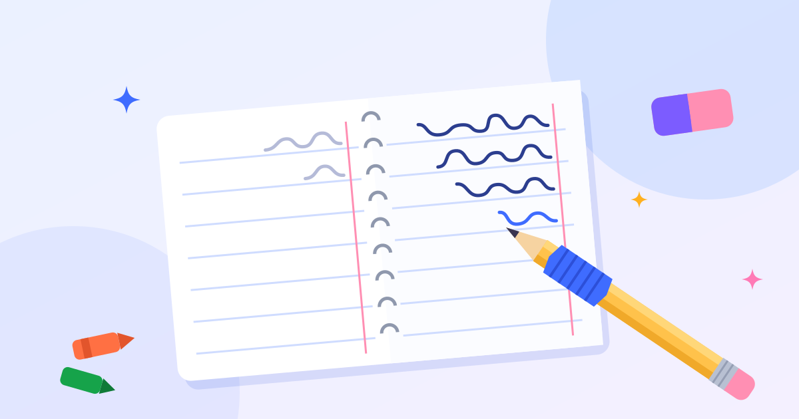
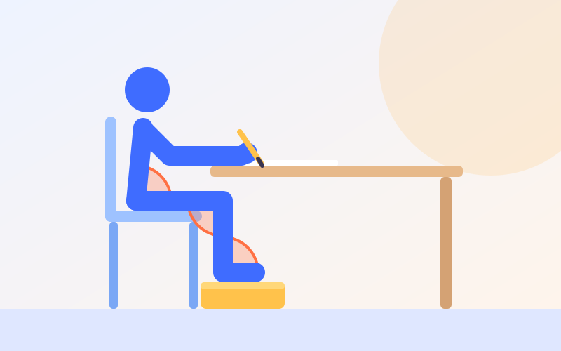
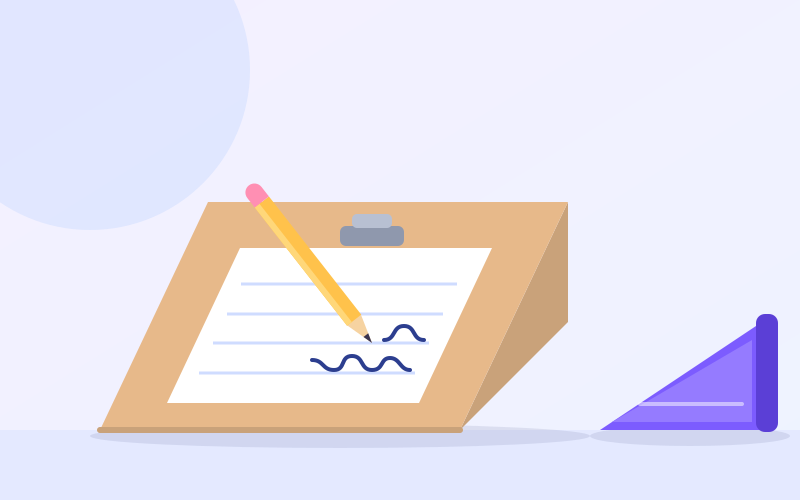

چگونه نحوهی گرفتن مداد و دستخط کودک را بهتر کنیم؟
گرفتن درست مداد فقط به ظاهر دستخط مربوط نیست؛ روی سرعت نوشتن، خستگی دست و حتی علاقهی
کودک به مدرسه هم اثر میگذارد. در این راهنما مراحل طبیعی رشد گرفتن مداد، نشانههای مشکل و
راههای عملی بهتر کردن دستخط را میخوانید.
زمان مطالعه: ۶ دقیقه

گرفتن مداد چطور رشد میکند؟
کودک یکشبه مداد را درست نمیگیرد. گرفتن مداد در چند مرحلهی پشت سر هم رشد میکند و در هر
مرحله، حرکت از شانه به سمت انگشتها نزدیکتر میشود. سنها تقریبیاند:
گرفتن مشتی (حدود ۱ تا ۲ سالگی). مداد در مشت است و کل بازو از شانه حرکت میکند؛ خطخطیهای بزرگ و پرانرژی.
گرفتن انگشتی (حدود ۲ تا ۳ سالگی). انگشتها دور مداد و رو به کاغذاند و حرکت بیشتر از آرنج میآید.
سهانگشتی یا چهارانگشتی ثابت (حدود ۳ و نیم تا ۴ سالگی). مداد میان شست، اشاره و میانی است، اما هنوز مچ و بازو آن را حرکت میدهند.
سهانگشتی پویا (حدود ۴ و نیم تا ۶ سالگی). ساعد و مچ روی میز تکیه دارند و این خودِ انگشتها هستند که مداد را حرکت میدهند.
خبر خوب این است که «سهانگشتی پویا» تنها شکل درست نیست. پژوهشها نشان دادهاند چند شکل
دیگرِ گرفتن پختهی مداد، مثل گرفتن چهارانگشتی، از نظر سرعت و خوانایی دستخط تفاوت چندانی
با آن ندارند. اگر گرفتن کودک راحت است، دستش خسته نمیشود و خطش خواناست، نیازی به عوض کردنش
نیست.
نشانههایی که میگوید کودک به کمک نیاز دارد
بعد از ۵ تا ۶ سالگی هنوز مداد را مشت میکند.
شست دور مداد پیچیده یا روی انگشت اشاره قفل شده است.
آنقدر فشار میدهد که نوک مداد میشکند، یا آنقدر کم که خط بهزحمت دیده میشود.
انگشتها خیلی نزدیک نوک یا خیلی دور از آن قرار میگیرند.
هنگام نوشتن، کل بازو را حرکت میدهد، نه انگشتها را.
زود خسته میشود، دستش را تکان میدهد یا از درد دست میگوید.
مچ را بهشدت خم میکند یا دستش را دور خط «قلاب» میکند.
پیش از مداد: پایهها را بسازید
مشکل گرفتن مداد اغلب از خود مداد شروع نمیشود. وقتی شانه و تنه ثبات کافی ندارند یا عضلههای
کوچک دست ضعیفاند، کودک ناچار با مشت کردن یا فشار زیاد جبران میکند. پس پیش از اصلاح
گرفتن مداد، پایهها را تقویت کنید:
شانه و تنه: راه رفتن با دست (فرغونی)، چهاردستوپا رفتن، بازی روی شکم با تکیه بر آرنج.
قدرت دست: خمیربازی، گیرهی لباس، اسپری آب و پاره کردن کاغذ.
سه نقطهی رنگی جای انگشتها را نشان میدهد:
میانی زیر مداد،
شست و
اشاره؛ هر سه در فاصلهی دو سه سانتیمتری نوک.
ابزار کوتاه هم خودبهخود جای مشت کردن باقی نمیگذارد.
ابزار کوتاه: مدادشمعی شکسته یا مداد پنج تا هفت سانتی؛ روی ابزار کوتاه فقط جای سه انگشت هست.
ترفند «نیشگون و چرخش»: مداد را روی میز بگذارید، طوری که نوکش رو به کودک باشد. کودک با شست و اشاره مداد را درست بالای قسمت تراشیده بگیرد و ته مداد را به سمت خودش بالا بیاورد و برگرداند تا روی کنار انگشت میانی بنشیند.
علامت جای انگشت: با ماژیک یا برچسب کوچک، جای شست و اشاره را روی مداد علامت بزنید.
دو انگشت آخر را مشغول کنید: یک دستمال کاغذی مچاله را با انگشت چهارم و پنجم در کف دست نگه دارد تا فقط سه انگشت اول با مداد کار کنند.
مداد مثلثی یا رابط مداد: برای کودکان کوچکتر یا دستهای ضعیفتر کمک میکند. رابط را موقت و با نظر کاردرمانگر به کار ببرید.
محیط نوشتن: نشستن ۹۰-۹۰-۹۰ و سطح شیبدار
کودکی که پاهایش آویزان است یا میزش تا زیر چانه میرسد، تمام انرژیاش صرف صاف نشستن میشود و
انگشتها سهم کمی میبرند. قاعدهی سادهی «۹۰-۹۰-۹۰» را به یاد داشته باشید:

کف پا روی زمین یا یک زیرپایی، و لگن، زانو و مچ پا تقریباً با زاویهی قائمه. میزی که کمی
پایینتر از آرنج است، ساعد را آزاد میگذارد تا انگشتها کار کنند.
پاها: کف پا کامل روی زمین؛ اگر نمیرسد، یک جعبه یا چند کتاب زیر پا بگذارید.
میز: کمی پایینتر از آرنج، طوری که ساعد بدون بالا انداختن شانه روی میز قرار بگیرد.
دست کمکی: دست دیگر کاغذ را نگه میدارد؛ این نصف کار نوشتن است.
برای بعضی کودکان، سطح شیبدار تفاوت بزرگی ایجاد میکند. شیب، مچ را در وضعیت کمی رو به
عقب نگه میدارد؛ همان وضعیتی که انگشتها در آن بیشترین کنترل را دارند. لازم نیست چیزی بخرید:
یک کلاسور حلقهای پهن که رو به جلو خوابانده شود، همین کار را میکند.

تختهی شیبدار، یا یک کلاسور حلقهای پهن که لبهی ضخیمش رو به بالای کاغذ است.
تمرینهای بهتر کردن دستخط
اول بزرگ، بعد کوچک: شکل هر حرف را اول روی تختهی وایتبرد، در هوا یا در سینی نمک تمرین کند و بعد در دفتر.
کرسی خط: دفتری با خط زمینهی پررنگ یا رنگی کمک میکند حروف روی کرسی بنشینند؛ خط زمینه را میتوانید با ماژیک پررنگ کنید.
فاصلهی کلمهها: یک چوب بستنی را میان کلمهها بگذارد تا اندازهی فاصله را حس کند.
فشار مداد: با مداد نوکی بنویسد؛ اگر نوک مدام میشکند، یعنی فشار زیاد است و کم کردنش را میشود به بازی تبدیل کرد.
کیفیت بهجای کمیت: سه سطر خوب از یک صفحهی شلخته بهتر است. در پایان، کودک بهترین کلمهاش را خودش انتخاب کند و دورش خط بکشد.
گرم کردن پیش از تکلیف: دو دقیقه فشردن توپ نرم، ضربه زدن نوک انگشتها روی میز یا بالا کشیدن بدن روی دستههای صندلی.
چه کارهایی را نکنیم
تذکر مدام «مداد را درست بگیر!» کمکی نمیکند. بهجای تذکر، ابزار و محیط را تغییر دهید.
کودک چپدست را به راستدستی وادار نکنید؛ فقط وضعیت کاغذ و نشستن او را متناسب با دست چپ تنظیم کنید.
دستخط را با رونویسیهای طولانی و تنبیهی درست نکنید؛ خستگی، خط را بدتر و نوشتن را منفورتر میکند.
چند ابزار کمکی را همزمان امتحان نکنید؛ هر کدام را چند هفته فرصت بدهید.
اگر با وجود این تمرینها نوشتن هنوز برای کودک دردناک، بسیار کند یا ناخواناست، ارزیابی
دستورزی و ترسیم و در صورت جابهجایی و قرینهنویسی حروف،
ارزیابی ادراک بینایی را جدی بگیرید.
این مقاله برای آگاهی والدین نوشته شده و جای ارزیابی تخصصی را نمیگیرد. کاردرمانگر بعد از
دیدن نوشتن کودک میتواند بگوید گره کار دقیقاً کجاست.